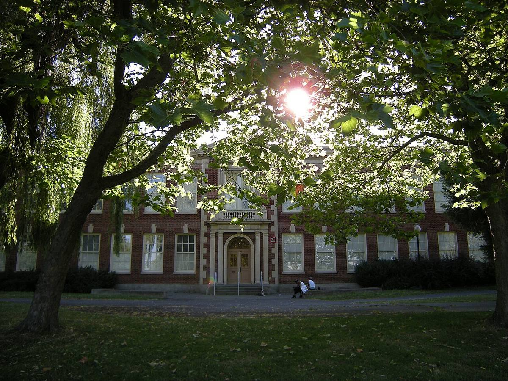

Living in Dunlap

Dunlap is a neighborhood in southern Seattle, Washington, just north of Rainier Beach. It is home to Dunlap Elementary School, part of the Seattle Public Schools. Dunlap is named after Joseph Dunlap, the first homesteader in the area. (From Wikipedia, CC BY-SA 4.0)
Dunlap is a neighborhood in Rainier Valley, Seattle with about 5,312 residents. The typical home value is about $604K (-2.3% over the past year), and 38 homes sold in the last 12 months. It is somewhat walkable, with higher crime than most neighborhoods in the area.
Home prices and the market
| Typical home value | $604K · -2.3% over 12 months |
|---|---|
| Homes sold, last 12 months | 38 · median sale price $592K · 2 were condos |
| Homes for sale (estimate) | 11 · homes typically go under contract in 22 days |
| Median household income | $97K · 144th highest income of 155 |
Schools
| Elementary | South Shore PK-8 School, 0.1 mi · 37% meet standard Area average 36% · 149th best elementary schools of 155 |
|---|---|
| Middle school | South Shore PK-8 School, 0.1 mi · 38% meet standard Area average 41% · 148th best middle schools of 155 |
| High school | Rainier Beach High School, 0.2 mi · 37% meet standard Area average 41% · 154th best high schools of 155 |
| Nearest college | South Seattle College-Georgetown Campus, 2.8 mi |
Share of students meeting the Washington state standard in English and math (2024-25). The nearest school is not always the assigned school; check with the school district.
Safety
About 123 crimes per 1,000 residents a year (violent crimes counted three times), higher crime than most neighborhoods in the area: 142nd lowest crime of 155. Based on mapped police incidents in this neighborhood, scaled to the city's FBI-reported rate. Busy commercial areas can look high because visitors are not counted as residents.
Getting around
| Walkability | 14.4 of 20 (somewhat walkable) · 88th most walkable of 155 |
|---|---|
| Light rail or train | Rainier Beach, 0.5 mi · 24th closest to rail of 155 |
| Nearest bus stop | Rainier Ave S & Cloverdale Pl S, 0.05 mi |
| How residents commute | 14% take transit · 19% work from home |
Everyday amenities
| Grocery store | Safeway, 0.3 mi · 2 within a mile |
|---|---|
| Pharmacy | Rite Aid, 0.2 mi |
| Restaurants | 18 within a mile · 83rd most restaurants nearby of 155 |
| Shopping | Mercer Village Shopping Center, 2.3 mi |
| Hospital | St. Anne Hospital, 5.8 mi · 3 clinics within 2 miles |
| Library | Rainier Beach Library, 0.3 mi |
Parks and recreation
| Nearest park | Rainier Beach Playfield, 0.1 mi · 96 acres of parks within a mile |
|---|---|
| Large green space | Kubota Gardens, 0.7 mi |
| Walking trail | Chief Sealth Trail, 0.4 mi |
| Gyms, spas and studios | 6 within a mile |
| Golf | Rainier Golf & Country Club, 2.3 mi |
Thinking about Dunlap?
Rachel Yo, Realogics Sotheby's International Realty, can walk you through homes for sale, recent sales and what to know before you buy here.
Your details go only to Rachel Yo at Realogics Sotheby's International Realty to answer your request. They are not sold or shared.
Nearby neighborhoods
- Rainier BeachSeattle · $622K
- South Beacon HillSeattle · $596K
- BrightonSeattle · $733K
- Holly ParkSeattle · $579K
- Rainier ViewSeattle · $625K
- South EndMercer Island · $2.42M
Data as of: home values Zillow 2026-09; recorded sales Nov 2025 – Oct 2026; schools OSPI 2024-25; Census ACS 2020-2024. Distances are straight-line from the center of the neighborhood.